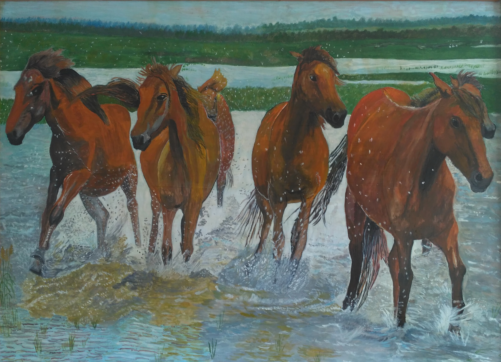

Кони, кони — вы сказка и песня.
К вам любви объяснить не смогу.
Словно в детстве каком-то нездешнем
Вижу вас я в ночном на лугу.
Помню, как стригунком жеребенком
Прикоснулось доверье к руке,
И с тех пор то негромко, то звонко
Все зовет и зовет вдалеке.
И куда б нас мечта ни носила,
Долетая до новых планет,
Будем мерить мы вашею силой
Неуемную силу ракет.
Но какою нам силой измерить
То тепло, что рождаете вы?
То стремленье прекрасному верить
В тихом шуме дубрав и травы?
То слиянье с природой чудесной,
Что осталось в ночном на лугу?
Кони, кони - вы сказка и песня!
К вам любви объяснить не смогу...
